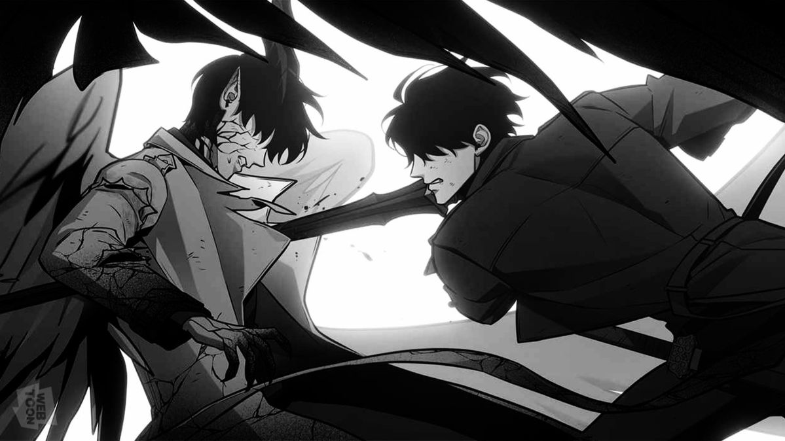

[Main Chapter #1 – Started!]
Only Oldest Dream who knows the ending.

Yoo Joonghyuk is a Regressor who has repeated his life countless times. In this scenario, he is often both an ally and a rival to Kim Dokja.
[the story is just for that one reader]